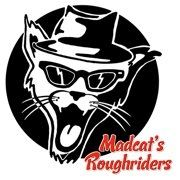

Wat mag je verwachten als je een doorwinterde bluesrot als Frank D'Heye samenzet met een fluweel gevingerde gitarist als Yves Lenaerts? Voeg daar nog eens de jongste en groovende ritmesectie in het circuit aan toe in de vorm van Niels Deglin en Bram Gourmand.
Na enkele omzwervingen heeft dit viertal onomstootbaar haar eigen sound gevonden. We hebben het over een afgewogen mix van swampy grooves, dirty harpin' en funky swings, afgewerkt met verrassend stinkende boogies. Ze nemen hun publiek mee op een trip door eigen composities, waarbij ze de grote bluesmeesters eren zonder een zoveelste copyband te zijn. Deze heren staan garant voor een avond vol passie en entertainment en mikken recht op het hart van het publiek .
Nieuwsgierig? Check out the Gallery
